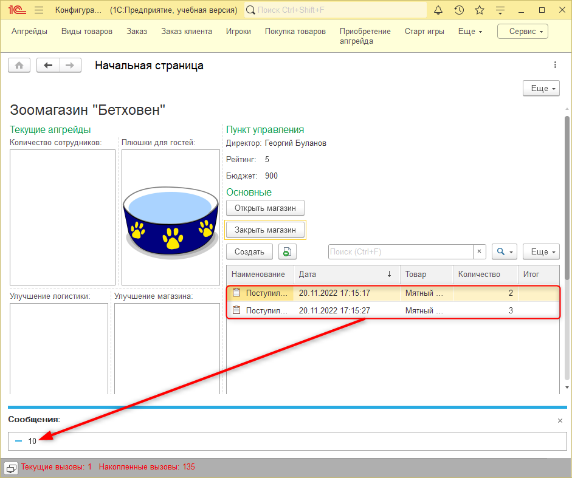
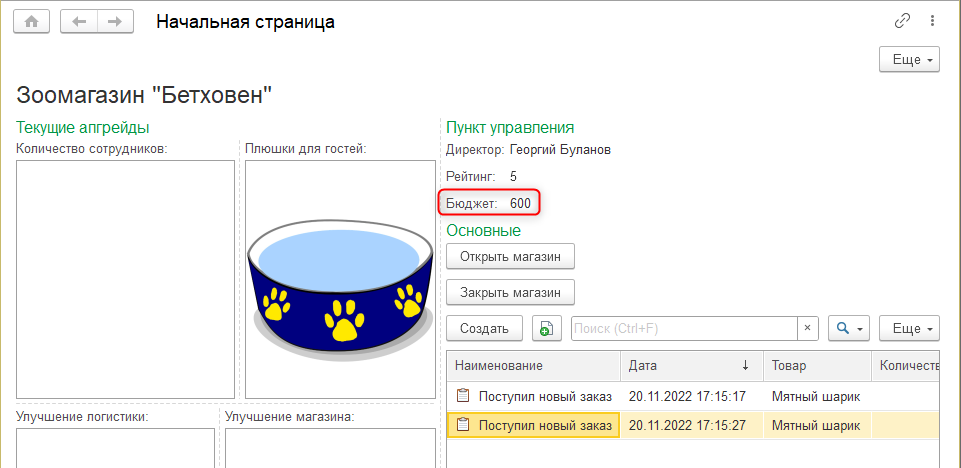

|
|
Рис. 14.13. Изменения в конструкторе движений для регистра "Остатки товаров" |
Рис. 14.14. Изменения в конструкторе движений для регистра "Остатки денег" |
Тема занятия – подготовка функционала для участия нескольких игроков. Для этого нам потребуется выполнить 4 задачи:
При входе в игру пользователь будет указывать свое имя. Пароль для учетной записи установить не удастся, так как разработка ведется на учебной версии. Однако при регистрации игрок должен будет себя как-то обозначить.
Когда новый игрок регистрируется, его данные должны записываться в общий "Список игроков". Для реализации хранения данных об игроках потребуется создать справочник.
В рамках первой задачи необходимо создать список для хранения данных игроков. Добавим новый справочник "Игроки", представление объекта – "Игрок" (рис. 14.1).
Рис. 14.1. Добавление справочника "Игроки"
Данный справочник будет пополняться интерактивно по мере появления новых участников в системе. Однако в системе изначально должен быть один игрок – Администратор. Запись об администраторе – это заранее определенные в системе данные.
Перед тем как создать предопределенный элемент, потребуется сделать ряд настроек на вкладке "Данные".
Изменим длину кода и наименования на значения побольше – 50 и 50 соответственно (рис. 14.2).
Рис. 14.2. Изменение длины стандартных реквизитов
Поле "Наименование" будет использоваться для отображения данных игрока в пользовательском режиме. Поле "Код" будет использоваться для программного анализа игрока – поэтому длина этих реквизитов одинакова.
Тип кода оставим строковым, чтобы была возможность формировать код из букв и прочих символов.
Перейдем на вкладку "Прочее" и нажмем на кнопку "Предопределенные", чтобы создать запись об Администраторе в системе (рис. 14.3).
Рис. 14.3. Переход к предопределенным данным
Добавим новый предопределенный элемент с помощью кнопки "Добавить". Имя предопределенного – "Администратор", код – "Администратор" (рис. 14.4).
Рис. 14.4. Добавление предопределенного элемента
В дальнейшем он пригодится, когда будут осуществляться поиск или создание пользователей, чтобы сопоставлять их с теми пользователями, которые уже есть в системе.
Например, если игру запускает новый участник, которого еще нет в списке игроков, нужно будет создать запись с его данными. Данный механизм будет реализован позднее.
Сейчас зафиксировано, что изначально в системе есть Администратор. Но при этом, когда система запускается, нигде не указано, кто именно ее запустил.
Для того чтобы в дальнейшем сделать настройки, связанные с появление новых игроков, и привязку прогресса игроков к их "аккаунтам", нужно реализовать механизм, благодаря которому система будет понимать, кто именно сейчас авторизовался в системе.
В дальнейшем система действительно будет запускаться под разными пользователями, но перед этим необходимо создать запись в системе о том, кто зашел в систему.
В рамках второй задачи мы укажем системе на то, кто сейчас зашел в программу. Это можно сделать с помощью общего механизма "Параметр сеанса".
Параметр сеанса – это механизм, который позволяет понять, кто сейчас зашел в программу. |
Развернем ветку "Общие" и добавим новый параметр сеанса. Имя параметра – "ТекущийИгрок", тип – "СправочникСсылка.Игроки" (рис. 14.5).
Рис. 14.5. Добавление параметра сеанса
Параметр сеанса – это значение, которое изменяется при каждом запуске программы другим пользователем. Например, в игру зашел Администратор, значит, "ТекущийИгрок" – Администратор.
Для того чтобы параметр сеанса заполнялся данными, необходимо определить обработчик, который срабатывает в момент запуска системы, когда система анализирует, кто к ней подключается. |
Временно реализуем фиксированное заполнение – систему запускает Администратор, поскольку пользователей в системе еще нет.
Откроем модуль сеанса, чтобы определить такой обработчик. Нажмем правой кнопкой мыши по конфигурации и выберем в списке "Открыть модуль сеанса" (рис. 14.6).
Рис. 14.6. Переход в модуль сеанса
Добавим обработчик "УстановкаПараметровСеанса". Для этого необходимо открыть "Процедуры и функции" и в открывшемся окне выбрать соответствующую процедуру (рис. 14.7).
Рис. 14.7. Добавление обработчика события
В процедуре определим, что параметр сеанса "ТекущийИгрок" будет равен предопределенному элементу "Администратор" из справочника "Игроки".
Обратиться сразу к элементу "Администратор" напрямую можно благодаря тому, что он был создан в конфигураторе. Такое обращение возможно только к предопределенным данным.
Поскольку в системе будут игроки, необходимо реализовать механизм, с помощью которого каждому игроку будет начисляться начальный капитал. Для реализации данного механизма потребуется создать документ, который будет совершать движение информации в регистр накопления "ОстаткиДенег".
Однако сейчас структура регистра позволяет хранить информацию только о том, сколько осталось денег в целом, без привязки к капиталу конкретного игрока.
Для того чтобы разделить бюджет каждого игрока, добавим новое измерение в регистр накопления "ОстаткиДенег". Имя измерения – "Игрок", тип – "СправочникСсылка.Игроки", флаг "Запрет незаполненных значений" (рис. 14.8).
Рис. 14.8. Добавление измерения "Игрок" в регистр "Остатки денег"
Так как появилось разделение бюджета между игроками, имеет смысл реализовать разделение рейтинга и остатков товаров по игрокам.
Добавим аналогичное измерение в регистр накопления "Остатки товаров" на вкладке "Данные". Имя измерения – "Игрок", тип – "СправочникСсылка.Игроки", флаг "Запрет незаполненных значений" (рис. 14.9).
Рис. 14.9. Добавление измерения "Игрок" в регистр "Остатки товаров"
Для разделения рейтинга среди игроков также потребуется добавить информацию об игроке в регистр сведений "Регистрация апгрейдов". На вкладке "Данные" добавим новое измерение. Имя реквизита – "Игрок", тип – "СправочникСсылка.Игроки", флаг "Запрет незаполненных значений" (рис. 14.10).
Рис. 14.10. Добавление измерения "Игрок" в регистр "Регистрация апгрейдов"
Поскольку в регистрах появились новые измерения, необходимо внести изменения в логику записи из документов данных в эти регистры.
На текущий момент ни в одном из документов не фиксируются данные об игроке. Необходимо добавить реквизит "Игрок" в каждый документ.
Начнем с документа "Покупка товаров". В окне редактирования документа перейдем на вкладку "Данные" и добавим новый реквизит. Имя реквизита – "Игрок", тип – "СправочникСсылка.Игроки" (рис. 14.11).
Рис. 14.11. Добавление реквизита "Игрок" в документ "Покупка товаров"
Далее необходимо передать информацию о том, какой игрок совершил покупки товаров. Перейдем на вкладку "Движения" и откроем "Конструктор движений" (рис. 14.12).
Рис. 14.12. Переход в конструктор движений
Для регистра накопления "Остатки товаров" в поле "Игрок" должна записываться информация из реквизита "Игрок" (рис. 14.13). Аналогично для регистра накопления "Остатки денег" в поле "Игрок" должны записываться данные из реквизита "Игрок" (рис. 14.14).
|
|
Рис. 14.13. Изменения в конструкторе движений для регистра "Остатки товаров" |
Рис. 14.14. Изменения в конструкторе движений для регистра "Остатки денег" |
В результате в процедуре "ОбработкаПроведения" появятся новые строки "Движение.Игрок = Игрок".
Информация об игроке не должна отображаться на форме элемента, так как данный реквизит должен заполняться автоматически на основании параметра сеанса "ТекущийИгрок". Запись информации в реквизит будет происходить перед записью данных о покупке в базу.
Аналогичные действия необходимо провести с остальными документами.
Откроем окно редактирования документа "Заказ клиента" и добавим новый реквизит на вкладке "Данные". Имя реквизита – "Игрок", тип – "СправочникСсылка.Игроки" (рис. 14.15).
Рис. 14.15. Добавление реквизита "Игрок" в документ "Заказ клиента"
Перейдем на вкладку "Движения" документа "Заказ клиента" и откроем "Конструктор движений" (рис. 14.16).
Рис. 14.16. Переход в конструктор движений
Информация в измерение "Игрок" регистра накопления "Остатки товаров" должна записываться из реквизита "Игрок" (рис. 14.17). Аналогично для регистра накопления "Остатки денег" в поле "Игрок" должны записываться данные из реквизита "Игрок" (рис. 14.18).
Рис. 14.17. Изменения в конструкторе движений для регистра "Остатки товаров" |
Рис. 14.18. Изменения в конструкторе движений для регистра "Остатки денег" |
||
|
Если при заполнении данных для регистра "Остатки денег" нажать на кнопку "Заполнить выражения", то для поля "Количество" будет установлено неверное выражение. Следует заменить его на "ИтоговаяСумма". |
||
В результате в процедуре "ОбработкаПроведения" появятся новые строки "Движение.Игрок = Игрок".
Также необходимо указать, на счет какого игрока поступят деньги с заказа. Для этого заполним реквизит "Игрок" значением из параметра сеанса "ТекущийИгрок" перед записью документа.
Повторим те же самые действия для документа "Приобретение апгрейда". На вкладке "Данные" добавим новый реквизит. Имя реквизита – "Игрок", тип – "СправочникСсылка.Игроки" (рис. 14.19).
Рис. 14.19. Добавление реквизита "Игрок" в документ "Приобретение апгрейда"
После добавления реквизита необходимо внести изменения в логику записи данных из документа в регистры. Перейдем на вкладку "Движения" и откроем "Конструктор движений" (рис. 14.20).
Рис. 14.20. Переход в конструктор движений
В конструкторе движений для регистров "Регистрация апгрейдов" и "Остатки денег" укажем в качестве выражения для поля "Игрок" одноименный реквизит документа (рис. 14.21 – 14.22).
Рис. 14.21. Изменения в конструкторе движений для регистра "Регистрация апгрейдов" |
Рис. 14.22. Изменения в конструкторе движений для регистра "Остатки денег" |
В результате процедура "Обработка проведения" будет выглядеть следующим образом:
Также добавим новый обработчик события "ПередЗаписью" для того, чтобы фиксировать информацию об игроке, купившем апгрейд.
Следующее, что необходимо сделать, – создать механизм, который позволит фиксировать начальный бюджет для игрока.
Для реализации данного механизма создадим документ. Имя документа – "СтартИгры" (рис. 14.23).
Рис. 14.23. Добавление документа "СтартИгры"
Перейдем на вкладку "Данные", чтобы определить структуру документа. В документе необходимо отобразить информацию об игроке, а также о бюджете, который ему начисляется.
Добавим первый реквизит. Имя реквизита – "Игрок", тип – "СправочникСсылка.Игроки" (рис. 14.24).
Рис. 14.24. Добавление реквизита "Игрок" в документ "Старт игры"
Добавим второй реквизит, который будет содержать в себе информацию о начисляемой на счет игрока сумме в начале игры. Имя реквизита – "Бюджет", тип – "число", длина – 10, точность – 0, неотрицательное (рис. 14.25).
Рис. 14.25. Добавление реквизита "Бюджет" в документ "Старт игры"
Созданный документ должен совершать движения в регистр "Остатки денег". Перейдем на вкладку "Движения" и поставим галочку напротив регистра накопления "ОстаткиДенег". Далее настроим логику записи движений в регистр, нажав на кнопку "Конструктор движений" (рис. 14.26).
Рис. 14.26. Вкладка "Движения" документа "Старт игры"
Из документа "Старт игры" данные в регистр накопления "Остатки денег" должны записываться со знаком плюс, так как документ фиксирует поступление денег на счет игрока. В качестве выражений для полей "Игрок" и "Количество" укажем реквизиты документа "Игрок" и "Бюджет" соответственно (рис. 14.27).
Рис. 14.27. Настройка движения в конструкторе
В результате в модуле объекта документа "Старт игры" сформировалась процедура "ОбработкаПроведения".
В дальнейшем данный документ будет создаваться в фоновом режиме после регистрации нового игрока. Данный механизм будет реализован позже, а сейчас данные об игроке и бюджете будут указываться вручную. Стартовый капитал игрока будет составлять 1000.
Обновим конфигурацию базы данных и запустим пользовательский режим.
Создадим новый документ "Старт игры". В качестве игрока укажем "Администратора", бюджет – 1000. Проведем данный документ (рис. 14.28).
Рис. 14.28. Создание документа "Старт игры"
Документы для старта игры должны создаваться в фоновом режиме. Логика алгоритма следующая: как только участник зарегистрируется, игра должна перезапуститься.
Смоделируем данный процесс: перезапустим пользовательский режим (рис. 14.29).
Рис. 14.29. Начальная страница после перезапуска
В результате на начальной странице отобразится бюджет. Однако эта сумма в 1000 сейчас не принадлежит текущему игроку, она общая. Сейчас все механизмы, связанные с получением остатков товаров и бюджетом, получают информацию только по общим значениям.
Четвертая задача сводится к тому, чтобы исправить сложившуюся ситуацию. Для этого нам потребуется программно учитывать данные из измерения "Игрок" при получении информации из регистров.
Закроем пользовательский режим и вернемся в конфигуратор.
Сначала изменим логику получения данных о бюджете игрока. Перейдем в модуль общей формы "Начальная страница".
Сейчас информация о состоянии счета игрока формируется на основании таблицы остатков. Чтобы данные выбирались по определенному игроку, необходимо в параметрах функции "Остатки" указать параметры отбора в виде структуры.
Следующее, что необходимо настроить, – это получение данных о рейтинге игрока. Рейтинг формируется в момент получения изображений, которые выводятся на начальный экран.
В функции "ПолучитьАдресКартинки" на основании вида апгрейда формируется срез информации. Но теперь этого отбора недостаточно, так как необходимо получать данные не только по конкретному виду апгрейда, но и по конкретному игроку.
Для реализации данного механизма вставим в структуру "СтруктуруОтбора" еще одну пару "ключ – значение". Ключ – "Игрок", значение – "ПараметрыСеанса.ТекущийИгрок".
Осталось решить еще одну задачу, которая связана со списанием товара. Сейчас товары списываются согласно тому, что есть в наличии на складе. Необходимо внести изменения в логику проверки остатков товаров таким образом, чтобы остаток проверялся только у конкретного игрока.
Перейдем в модуль объекта бизнес-процесса "Заказ" и развернем процедуру "ПроверкаТовараНаСкладеПроверкаУсловия".
Чтобы остатки товаров считывались для текущего игрока, вновь придется реализовать отбор по измерению "Игрок".
Создадим структуру для отбора. В качестве ключа укажем имя измерения, по которому будет производиться отбор, – "Игрок". Значение – "ПараметрыСеанса.ТекущийИгрок".
Это пока не все нюансы, которые нужно учесть с появлением игрока. Для того чтобы покупать товары и апгрейды, необходимо, чтобы у текущего игрока хватало на это денег. Потребуется также вмешаться в логику проведения документов "Покупка товара" и "Приобретение апгрейда".
Перейдем в модуль объекта документа "Покупка товара" и изменим логику проверки остатка денежных средств на счету игрока.
При вызове функции "ЕстьОтрицательныеФинансы" необходимо передавать информацию об игроке, который осуществляет покупку. Передадим в качестве параметра функции данные из реквизита "Игрок".
Аналогично все должно происходить и в документе "Приобретение апгрейда". Перейдем в модуль объекта этого документа и укажем в качестве параметра функции "ЕстьОтрицательныеФинансы" данные об игроке.
Так как теперь вызов функции происходит с параметром, необходимо принять этот параметр и обработать.
Здесь можно провести аналогию с поездами: с вокзала отправляется поезд с одним вагоном, следовательно, в пункте прибытия будут ожидать поезд также с одним вагоном.
Щелкнем правой кнопкой мыши по функции и выберем в списке "Перейти к определению" (рис. 14.30).
Рис. 14.30. Переход к определению функции
В открывшемся окне нажмем на кнопку "ОК" (рис. 14.31).
Рис. 14.31. Объект перехода
Укажем в качестве параметра функции переменную "Игрок".
Для получения информации о финансовом состоянии игрока также потребуется реализовать отбор данных из виртуальной таблицы "Остатки". Создадим соответствующую структуру отбора.
Обновим конфигурацию базы данных и запустим пользовательский режим.
При запуске игры под игроком "Администратор" бюджет изначально составляет 1000 (рис. 14.32).
Рис. 14.32. Старт игры под "Администратором"
Приобретем для данного игрока апгрейд "Миска с водой" по цене 100 (рис. 14.33).
Рис. 14.33. Приобретение апгрейда "Миска с водой"
В результате на начальном экране изменились данные о бюджете и рейтинге игрока, а также появилась картинка с актуальным апгрейдом из категории "Плюшки для гостей" (рис. 14.34).
Рис. 14.34. Изменения на начальной странице
Нажмем на кнопку "Открыть магазин", чтобы проверить функционал автоматического поступления заказов (рис. 14.35).

Рис. 14.35. Проверка поступления заказов
В результате на начальной странице появились два новых заказа с интервалом в 10 секунд.
Приобретем товары, которые появились в списке, чтобы выполнить один из заказов.
Создадим новый документ "Покупка товаров". В качестве товара укажем тот продукт, на который поступил заказ (рис. 14.36).
Рис. 14.36. Покупка товара для выполнения заказа
Если приобрести товар на сумму большую, чем есть в бюджете игрока, то может возникнуть ошибка (рис. 14.37).
Рис. 14.37. Ошибка при нехватке денег
В таком случае необходимо повторно открыть магазин и дождаться поступления того заказа, который сейчас возможно выполнить.
Вернемся на форму начального экрана. В данный момент бюджет не изменился (рис. 14.38).
Рис. 14.38. Начальный экран без изменения бюджета
Данная ситуация могла возникнуть из-за того, что процедура, которая оповещает программу о том, что необходимо обновить начальный экран, не связана с событием формы.
Закроем пользовательский режим и вернемся в конфигуратор.
Откроем форму документа "Покупка товаров" и проверим, что в свойствах формы на вкладке "События" закреплен обработчик за событием "ПриЗакрытии".
Если событие не было установлено, то необходимо это сделать (рис. 14.39).
Рис. 14.39. Настройка связи между событием и обработчиком
Обновим конфигурацию базы данных и запустим пользовательский режим.
При повторном открытии программы бюджет действительно изменился (рис. 14.40).

Рис. 14.40. Начальный экран с измененным бюджетом
Чтобы убедиться в корректности работы алгоритма, отменим предыдущую покупку товара (рис. 14.41).
Рис. 14.41. Отмена покупки товара
После этого откроем документ и выполним покупку повторно. В данной ситуации нельзя реализовать покупку товара через форму списка, так как оповещение об обновлении начальной страницы срабатывает именно при закрытии формы "Покупка товаров" (рис. 14.42).
Рис. 14.42. Повторная покупка товара
В результате на начальном экране отобразится корректный бюджет игрока с учетом только что купленных товаров (рис. 14.43).

Рис. 14.43. Начальный экран с измененным бюджетом
Выполним один из заказов (рис. 14.44).
Рис. 14.44. Выполнение этапа заказа
После выполнения первого этапа заказа появилась новая задача – "Отправка заказа". Также выполним ее (рис. 14.45).
Рис. 14.45. Отправка заказа покупателю
На начальном экране вновь не изменился бюджет. Этап заказа, который сейчас был выполнен, является задачей. Необходимо реализовать механизм, благодаря которому при закрытии формы задачи будет отправляться оповещение об обновлении начальной страницы.
Закроем пользовательский режим и перейдем в конфигуратор.
Откроем форму задачи "Этапы заказов" и в свойствах формы определим обработчик для события "ПриЗакрытии" (рис. 14.46).
Рис. 14.46. Создание обработчика события "ПриЗакрытии"
При закрытии формы "Этапы заказа" необходимо оповещать систему о необходимости обновить начальную страницу. Данный механизм реализуется с помощью метода "Оповестить".
Обновим конфигурацию базы данных и запустим пользовательский режим.
Поскольку система была запущена повторно, то бюджет обновился (рис. 14.47).
Рис. 14.47. Начальный экран с измененным бюджетом
Для проверки работы механизма необходимо открыть магазин повторно и дождаться заказа, который может выполнить текущий игрок.
После того, как нужный заказ появился, можно закрыть магазин и приступить к покупке необходимых товаров.
Например, приобретем товар "Мятный шарик" в количестве 3 штук (рис. 14.48).
Рис. 14.48. Покупка товара "Мятный шарик"
Далее необходимо вернуться на начальный экран и выполнить заказ (рис. 14.49 – 14.50).
|
|
Рис. 14.49. Выполнение первого этапа заказа |
Рис. 14.50. Выполнение второго этапа заказа |
В результате выполнения заказа на начальной странице изменилась информация о бюджете игрока (рис. 14.51).
Рис. 14.51. Изменение информации о бюджете после выполнения заказа
На этом четырнадцатое занятие окончено!
На этом занятии мы начали готовить программу к введению многопользовательского режима. Создали новый справочник, а также доработали регистры и алгоритмы, автоматизирующие игровой процесс.
На следующих занятиях мы продолжим развивать тему разделения игры на пользователей. Необходимо будет создать форму регистрации, а также вести учет всех пользователей игры. Вдобавок к этому будет реализовано разделение прав доступа к объектам между игроками: одна группа будет иметь доступ ко всем реализованным механизмам, а вторая – лишь к части.
Это нужно запомнить |
|
Параметр сеанса – это механизм, который позволяет понять, кто сейчас зашел в программу. Чтобы сработала кнопка "Заполнить выражение", должны быть соблюдены два критерия:
|